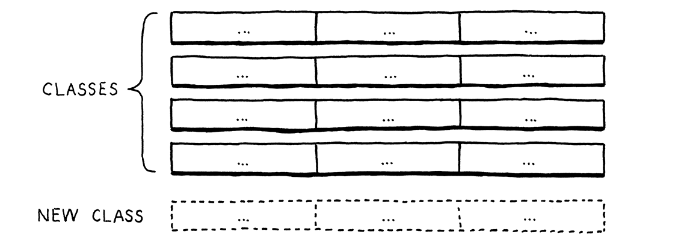

代码表示
To dwellers in a wood, almost every species of tree has its voice as well as its feature. 对于森林中的居民来说，几乎每一种树都有它的声音和特点。 Thomas Hardy, Under the Greenwood Tree
In the last chapter, we took the raw source code as a string and transformed it into a slightly higher-level representation: a series of tokens. The parser we’ll write in the next chapter takes those tokens and transforms them yet again, into an even richer, more complex representation. 在上一章中，我们将原始源代码转换为字符串，并将其转换为稍高级的表示形式：一系列标记。我们将在下一章编写的解析器将这些标记再次转换为更丰富、更复杂的表示法。
Before we can produce that representation, we need to define it. That’s the subject of this chapter. Along the way, we’ll cover some theory around formal grammars, feel the difference between functional and object-oriented programming, go over a couple of design patterns, and do some metaprogramming. 在我们能够输出这种表示形式之前，我们需要先对其进行定义。这就是本章的主题。在这一过程中，我们将围绕形式化语法进行一些理论讲解，感受函数式编程和面向对象编程的区别，会介绍几种设计模式，并进行一些元编程。
Before we do all that, let’s focus on the main goal—a representation for code. It should be simple for the parser to produce and easy for the interpreter to consume. If you haven’t written a parser or interpreter yet, those requirements aren’t exactly illuminating. Maybe your intuition can help. What is your brain doing when you play the part of a human interpreter? How do you mentally evaluate an arithmetic expression like this: 在做这些事情之前，我们先关注一下主要目标——代码的表示形式。它应该易于解析器生成，也易于解释器使用。如果您还没有编写过解析器或解释器，那么这样的需求描述并不能很好地说明问题。也许你的直觉可以帮助你。当你扮演一个人类解释器的角色时，你的大脑在做什么？你如何在心里计算这样的算术表达式：
1 + 2 * 3 - 4
Because you understand the order of operations—the old “Please Excuse My Dear Aunt Sally” stuff—you know that the multiplication is evaluated before the addition or subtraction. One way to visualize that precedence is using a tree. Leaf nodes are numbers, and interior nodes are operators with branches for each of their operands. 因为你已经理解了操作的顺序——以前的“Please Excuse My Dear Aunt Sally”之类，你知道乘法在加减操作之前执行。有一种方法可以将这种优先级进行可视化，那就是使用树。叶子节点是数字，内部节点是运算符，它们的每个操作数都对应一个分支。
In order to evaluate an arithmetic node, you need to know the numeric values of its subtrees, so you have to evaluate those first. That means working your way from the leaves up to the root—a post-order traversal: 要想计算一个算术节点，你需要知道它的子树的数值，所以你必须先计算子树的结果。这意味着要从叶节点一直计算到根节点——后序遍历：
- A.从完整的树开始，先计算最下面的操作
2*3； - B.现在计算
+； - C.接下来，计算
-； - D.最终得到答案。

If I gave you an arithmetic expression, you could draw one of these trees pretty easily. Given a tree, you can evaluate it without breaking a sweat. So it intuitively seems like a workable representation of our code is a tree that matches the grammatical structure—the operator nesting—of the language. 如果我给你一个算术表达式，你可以很容易地画出这样的树；给你一棵树，你也可以毫不费力地进行计算。因此，从直观上看，我们的代码的一种可行的表示形式是一棵与语言的语法结构（运算符嵌套）相匹配的树。
We need to get more precise about what that grammar is then. Like lexical grammars in the last chapter, there is a long ton of theory around syntactic grammars. We’re going into that theory a little more than we did when scanning because it turns out to be a useful tool throughout much of the interpreter. We start by moving one level up the Chomsky hierarchy . . . 那么我们需要更精确地了解这个语法是什么。就像上一章的词汇语法一样，围绕句法语法也有一大堆理论。我们要比之前处理扫描时投入更多精力去研究这个理论，因为它在整个解释器的很多地方都是一个有用的工具。我们先从乔姆斯基谱系中往上升一级……
5 . 1上下文无关语法
In the last chapter, the formalism we used for defining the lexical grammar—the rules for how characters get grouped into tokens—was called a regular language. That was fine for our scanner, which emits a flat sequence of tokens. But regular languages aren’t powerful enough to handle expressions which can nest arbitrarily deeply. 在上一章中，我们用来定义词法语法（字符如何被分组为词法标记的规则）的形式体系，被称为正则语言。这对于我们的扫描器来说没什么问题，因为它输出的是一个扁平的词法标记序列。但正则语言还不够强大，无法处理可以任意深度嵌套的表达式。
We need a bigger hammer, and that hammer is a context-free grammar (CFG). It’s the next heaviest tool in the toolbox of formal grammars. A formal grammar takes a set of atomic pieces it calls its “alphabet”. Then it defines a (usually infinite) set of “strings” that are “in” the grammar. Each string is a sequence of “letters” in the alphabet.
I’m using all those quotes because the terms get a little confusing as you move from lexical to syntactic grammars. In our scanner’s grammar, the alphabet consists of individual characters and the strings are the valid lexemes—roughly “words”. In the syntactic grammar we’re talking about now, we’re at a different level of granularity. Now each “letter” in the alphabet is an entire token and a “string” is a sequence of tokens—an entire expression. 我这里使用引号是因为当你从词法转到文法语法时，这些术语会让你有点困惑。在我们的扫描器词法中，alphabet（字母表）由单个字符组成，strings（字符串）是有效的词素（粗略的说，就是“单词”）。在现在讨论的句法语法中，我们处于一个不同的粒度水平。现在，字母表中的一个“letters（字符）”是一个完整的词法标记，而“strings（字符串）”是一个词法标记系列——一个完整的表达式。
Oof. Maybe a table will help:
嗯，使用表格可能更有助于理解：
| Terminology<br/>术语 | | Lexical grammar 词法 | Syntactic grammar 语法 |
| | | | |
| The “alphabet” is . . .
字母表 | → | Characters
字符 | Tokens
词法标记 |
| A “string” is . . .
字符串 | → | Lexeme or token
词素或词法标记 | Expression
表达式 |
| It’s implemented by the . . .
实现 | → | Scanner
扫描器 | Parser
解析器 |
| Terminology | Lexical grammar | Syntactic grammar | |
| The “alphabet” is . . . | → | Characters | Tokens |
| A “string” is . . . | → | Lexeme or token | Expression |
| It’s implemented by the . . . | → | Scanner | Parser |
A formal grammar’s job is to specify which strings are valid and which aren’t. If we were defining a grammar for English sentences, “eggs are tasty for breakfast” would be in the grammar, but “tasty breakfast for are eggs” would probably not. 形式化语法的工作是指定哪些字符串有效，哪些无效。如果我们要为英语句子定义一个语法，“eggs are tasty for breakfast “会包含在语法中，但 “tasty breakfast for are eggs “可能不会。
5 . 1 . 1语法规则
How do we write down a grammar that contains an infinite number of valid strings? We obviously can’t list them all out. Instead, we create a finite set of rules. You can think of them as a game that you can “play” in one of two directions. 我们如何写下一个包含无限多有效字符串的语法?我们显然无法一一列举出来。相反，我们创建了一组有限的规则。你可以把它们想象成一场你可以朝两个方向“玩”的游戏。
If you start with the rules, you can use them to generate strings that are in the grammar. Strings created this way are called derivations because each is derived from the rules of the grammar. In each step of the game, you pick a rule and follow what it tells you to do. Most of the lingo around formal grammars comes from playing them in this direction. Rules are called productions because they produce strings in the grammar. 如果你从规则入手，你可以用它们生成语法中的字符串。以这种方式创建的字符串被称为推导式（派生式），因为每个字符串都是从语法规则中推导出来的。在游戏的每一步中，你都要选择一条规则，然后按照它告诉你的去做。围绕形式化语法的大部分语言都倾向这种方式。规则被称为生成式，因为它们生成了语法中的字符串。
Each production in a context-free grammar has a head—its name—and a body, which describes what it generates. In its pure form, the body is simply a list of symbols. Symbols come in two delectable flavors: 上下文无关语法中的每个生成式都有一个头部（其名称）和描述其生成内容的主体。在纯粹的形式上看，主体只是一系列符号。符号有两种：
-
A terminal is a letter from the grammar’s alphabet. You can think of it like a literal value. In the syntactic grammar we’re defining, the terminals are individual lexemes—tokens coming from the scanner like
ifor1234.These are called “terminals”, in the sense of an “end point” because they don’t lead to any further “moves” in the game. You simply produce that one symbol.
-
A nonterminal is a named reference to another rule in the grammar. It means “play that rule and insert whatever it produces here”. In this way, the grammar composes.
There is one last refinement: you may have multiple rules with the same name. When you reach a nonterminal with that name, you are allowed to pick any of the rules for it, whichever floats your boat. 还有最后一个细节：你可以有多个同名的规则。当你遇到一个该名字的非终止符时，你可以为它选择任何一条规则，随您喜欢。
To make this concrete, we need a way to write down these production rules. People have been trying to crystallize grammar all the way back to Pāṇini’s Ashtadhyayi, which codified Sanskrit grammar a mere couple thousand years ago. Not much progress happened until John Backus and company needed a notation for specifying ALGOL 58 and came up with Backus-Naur form (BNF). Since then, nearly everyone uses some flavor of BNF, tweaked to their own tastes. 为了让这个规则具体化，我们需要一种方式来写下这些生成规则。人们一直试图将语法具体化，可以追溯到Pāṇini的Ashtadhyayi，他在几千年前编纂了梵文语法。直到约翰-巴库斯（John Backus）和公司需要一个声明ALGOL 58的符号，并提出了巴科斯范式（BNF），才有了很大的进展。从那时起，几乎每个人都在使用BNF的某种变形，并根据自己的需要进行了调整。
I tried to come up with something clean. Each rule is a name, followed by an
arrow (→), followed by a sequence of symbols, and finally ending with a
semicolon (;). Terminals are quoted strings, and nonterminals are lowercase
words.
我试图提出一个简单的形式。 每个规则都是一个名称，后跟一个箭头（→），后跟一系列符号，最后以分号（;）结尾。 终止符是带引号的字符串，非终止符是小写的单词。
Using that, here’s a grammar for breakfast menus: 以此为基础，下面是一个早餐菜单语法：
breakfast → protein "with" breakfast "on the side" ; breakfast → protein ; breakfast → bread ; protein → crispiness "crispy" "bacon" ; protein → "sausage" ; protein → cooked "eggs" ; crispiness → "really" ; crispiness → "really" crispiness ; cooked → "scrambled" ; cooked → "poached" ; cooked → "fried" ; bread → "toast" ; bread → "biscuits" ; bread → "English muffin" ;
We can use this grammar to generate random breakfasts. Let’s play a round and
see how it works. By age-old convention, the game starts with the first rule in
the grammar, here breakfast. There are three productions for that, and we
randomly pick the first one. Our resulting string looks like:
我们可以使用这个语法来随机生成早餐。我们来玩一轮，看看它是如何工作的。按照老规矩，游戏从语法中的第一个规则开始，这里是breakfast。它有三个生成式，我们随机选择第一个。我们得到的字符串是这样的：
protein "with" breakfast "on the side"
We need to expand that first nonterminal, protein, so we pick a production for
that. Let’s pick:
我们需要展开第一个非终止符，protein，所有我们要选择它对应的一个生成式。我们选：
protein → cooked "eggs" ;
Next, we need a production for cooked, and so we pick "poached". That’s a
terminal, so we add that. Now our string looks like:
接下来，我们需要 cooked的生成式，我们选择 "poached"。这是一个终止符，我们加上它。现在我们的字符串是这样的：
"poached" "eggs" "with" breakfast "on the side"
The next non-terminal is breakfast again. The first breakfast production we
chose recursively refers back to the breakfast rule. Recursion in the grammar
is a good sign that the language being defined is context-free instead of
regular. In particular, recursion where the recursive nonterminal has
productions on both sides implies that the language is
not regular.
下一个非终止符还是breakfast ，我们开始选择的breakfast 生成式递归地指向了breakfast 规则。语法中的递归是一个很好的标志，表明所定义的语言是上下文无关的，而不是正则的。特别是，递归非终止符两边都有生成式的递归，意味着语言不是正则的。
We could keep picking the first production for breakfast over and over again
yielding all manner of breakfasts like “bacon with sausage with scrambled eggs
with bacon . . . ” We won’t though. This time we’ll pick bread. There are three
rules for that, each of which contains only a terminal. We’ll pick “English
muffin”.
我们可以不断选择breakfast 的第一个生成式，以做出各种各样的早餐：“bacon with sausage with scrambled eggs with bacon . . . ”，【存疑，按照规则设置，这里应该不会出现以bacon开头的字符串，原文可能有误】但我们不会这样做。这一次我们选择bread。有三个对应的规则，每个规则只包含一个终止符。我们选 “English muffin”。
With that, every nonterminal in the string has been expanded until it finally contains only terminals and we’re left with: 这样一来，字符串中的每一个非终止符都被展开了，直到最后只包含终止符，我们就剩下：

Throw in some ham and Hollandaise, and you’ve got eggs Benedict. 再加上一些火腿和荷兰酱，你就得到了松饼蛋。
Any time we hit a rule that had multiple productions, we just picked one arbitrarily. It is this flexibility that allows a short number of grammar rules to encode a combinatorially larger set of strings. The fact that a rule can refer to itself—directly or indirectly—kicks it up even more, letting us pack an infinite number of strings into a finite grammar. 每当我们遇到具有多个结果的规则时，我们都只是随意选择了一个。 正是这种灵活性允许用少量的语法规则来编码出组合性更强的字符串集。一个规则可以直接或间接地引用它自己，这就更提高了它的灵活性，让我们可以将无限多的字符串打包到一个有限的语法中。
5 . 1 . 2增强符号
Stuffing an infinite set of strings in a handful of rules is pretty fantastic, but let’s take it further. Our notation works, but it’s tedious. So, like any good language designer, we’ll sprinkle a little syntactic sugar on top—some extra convenience notation. In addition to terminals and nonterminals, we’ll allow a few other kinds of expressions in the body of a rule: 在少量的规则中可以填充无限多的字符串是相当奇妙的，但是我们可以更进一步。我们的符号是可行的，但有点乏味。所以，就像所有优秀的语言设计者一样，我们会在上面撒一些语法糖。除了终止符和非终止符之外，我们还允许在规则的主体中使用一些其他类型的表达式：
-
Instead of repeating the rule name each time we want to add another production for it, we’ll allow a series of productions separated by a pipe (
|). 我们将允许一系列由管道符(|)分隔的生成式，避免在每次在添加另一个生成式时重复规则名称。bread → "toast" | "biscuits" | "English muffin" ;
-
Further, we’ll allow parentheses for grouping and then allow
|within that to select one from a series of options within the middle of a production. 此外，我们允许用括号进行分组，然后在分组中可以用|表示从一系列生成式中选择一个。protein → ( "scrambled" | "poached" | "fried" ) "eggs" ;
-
Using recursion to support repeated sequences of symbols has a certain appealing purity, but it’s kind of a chore to make a separate named sub-rule each time we want to loop. So, we also use a postfix
*to allow the previous symbol or group to be repeated zero or more times. 使用递归来支持符号的重复序列有一定的吸引力，但每次我们要循环的时候，都要创建一个单独的命名子规则，有点繁琐。所以， 我们也使用后缀*来允许前一个符号或组重复零次或多次。crispiness → "really" "really"* ;
-
A postfix
+is similar, but requires the preceding production to appear at least once. 后缀+与此类似，但要求前面的生成式至少出现一次。crispiness → "really"+ ;
-
A postfix
?is for an optional production. The thing before it can appear zero or one time, but not more. 后缀？表示可选生成式，它之前的生成式可以出现零次或一次，但不能出现多次。breakfast → protein ( "with" breakfast "on the side" )? ;
With all of those syntactic niceties, our breakfast grammar condenses down to: 有了所有这些语法上的技巧，我们的早餐语法浓缩为：
breakfast → protein ( "with" breakfast "on the side" )? | bread ; protein → "really"+ "crispy" "bacon" | "sausage" | ( "scrambled" | "poached" | "fried" ) "eggs" ; bread → "toast" | "biscuits" | "English muffin" ;
Not too bad, I hope. If you’re used to grep or using regular expressions in your text editor, most of the punctuation should be familiar. The main difference is that symbols here represent entire tokens, not single characters.
We’ll use this notation throughout the rest of the book to precisely describe Lox’s grammar. As you work on programming languages, you’ll find that context-free grammars (using this or EBNF or some other notation) help you crystallize your informal syntax design ideas. They are also a handy medium for communicating with other language hackers about syntax. 在本书的其余部分中，我们将使用这种表示法来精确地描述Lox的语法。当您使用编程语言时，您会发现上下文无关的语法(使用此语法或EBNF或其他一些符号)可以帮助您将非正式的语法设计思想具体化。它们也是与其他语言黑客交流语法的方便媒介。
The rules and productions we define for Lox are also our guide to the tree data structure we’re going to implement to represent code in memory. Before we can do that, we need an actual grammar for Lox, or at least enough of one for us to get started. 我们为Lox定义的规则和生成式也是我们将要实现的树数据结构（用于表示内存中的代码）的指南。 在此之前，我们需要为Lox编写一个实际的语法，或者至少要有一个足够上手的语法。
5 . 1 . 3Lox表达式语法
In the previous chapter, we did Lox’s entire lexical grammar in one fell swoop. Every keyword and bit of punctuation is there. The syntactic grammar is larger, and it would be a real bore to grind through the entire thing before we actually get our interpreter up and running. 在上一章中，我们一气呵成地完成了Lox的全部词汇语法，包括每一个关键词和标点符号。但句法语法的规模更大，如果在我们真正启动并运行解释器之前，就要把整个语法啃完，那就太无聊了。
Instead, we’ll crank through a subset of the language in the next couple of chapters. Once we have that mini-language represented, parsed, and interpreted, then later chapters will progressively add new features to it, including the new syntax. For now, we are going to worry about only a handful of expressions: 相反，我们将在接下来的几章中摸索该语言的一个子集。一旦我们可以对这个迷你语言进行表示、解析和解释，那么在之后的章节中将逐步为它添加新的特性，包括新的语法。现在，我们只关心几个表达式：
-
Literals. Numbers, strings, Booleans, and
nil. 字面量。数字、字符串、布尔值以及nil。 -
Unary expressions. A prefix
!to perform a logical not, and-to negate a number. 一元表达式。前缀!执行逻辑非运算，-对数字求反。 -
Binary expressions. The infix arithmetic (
+,-,*,/) and logic operators (==,!=,<,<=,>,>=) we know and love. 二元表达式。我们已经知道的中缀算术符（+，-，*，/）和逻辑运算符（==，！=，<，<=，>，> =）。 -
Parentheses. A pair of
(and)wrapped around an expression. 括号。表达式前后的一对（和）。
That gives us enough syntax for expressions like: 这已经为表达式提供了足够的语法，例如：
1 - (2 * 3) < 4 == false
Using our handy dandy new notation, here’s a grammar for those: 使用我们的新符号，下面是语法的表示：
expression → literal | unary | binary | grouping ; literal → NUMBER | STRING | "true" | "false" | "nil" ; grouping → "(" expression ")" ; unary → ( "-" | "!" ) expression ; binary → expression operator expression ; operator → "==" | "!=" | "<" | "<=" | ">" | ">=" | "+" | "-" | "*" | "/" ;
There’s one bit of extra metasyntax here. In addition
to quoted strings for terminals that match exact lexemes, we CAPITALIZE
terminals that are a single lexeme whose text representation may vary. NUMBER
is any number literal, and STRING is any string literal. Later, we’ll do the
same for IDENTIFIER.
这里有一点额外的元语法。除了与精确词素相匹配的终止符会加引号外，我们还对表示单一词素的终止符进行大写化，这些词素的文本表示方式可能会有所不同。NUMBER是任何数字字面量，STRING是任何字符串字面量。稍后，我们将对IDENTIFIER进行同样的处理。
This grammar is actually ambiguous, which we’ll see when we get to parsing it. But it’s good enough for now. 这个语法实际上是有歧义的，我们在解析它时就会看到这一点。但现在这已经足够了。
5 . 2实现语法树
Finally, we get to write some code. That little expression grammar is our
skeleton. Since the grammar is recursive—note how grouping, unary, and
binary all refer back to expression—our data structure will form a tree.
Since this structure represents the syntax of our language, it’s called a syntax tree.
最后，我们要写一些代码。这个小小的表达式语法就是我们的骨架。由于语法是递归的——请注意grouping, unary, 和 binary 都是指回expression的——我们的数据结构将形成一棵树。因为这个结构代表了我们语言的语法，所以叫做语法树。
Our scanner used a single Token class to represent all kinds of lexemes. To
distinguish the different kinds—think the number 123 versus the string
"123"—we included a simple TokenType enum. Syntax trees are not so homogeneous. Unary expressions have a single operand,
binary expressions have two, and literals have none.
我们的扫描器使用一个单一的 Token 类来表示所有类型的词素。为了区分不同的种类——想想数字 123 和字符串 "123"——我们创建了一个简单的 TokenType 枚举。语法树并不是那么同质的。一元表达式只有一个操作数，二元表达式有两个操作数，而字面量则没有。
We could mush that all together into a single Expression class with an
arbitrary list of children. Some compilers do. But I like getting the most out
of Java’s type system. So we’ll define a base class for expressions. Then, for
each kind of expression—each production under expression—we create a
subclass that has fields for the nonterminals specific to that rule. This way,
we get a compile error if we, say, try to access the second operand of a unary
expression.
我们可以将所有这些内容整合到一个包含任意子类列表的 Expression 类中。有些编译器会这么做。但我希望充分利用Java的类型系统。所以我们将为表达式定义一个基类。然后，对于每一种表达式——expression下的每一个生成式——我们创建一个子类，这个子类有该规则所特有的非终止符字段。这样，如果试图访问一元表达式的第二个操作数，就会得到一个编译错误。
Something like this: 类似这样：
package com.craftinginterpreters.lox; abstract class Expr { static class Binary extends Expr { Binary(Expr left, Token operator, Expr right) { this.left = left; this.operator = operator; this.right = right; } final Expr left; final Token operator; final Expr right; } // Other expressions... }
Expr is the base class that all expression classes inherit from. As you can see
from Binary, the subclasses are nested inside of it. There’s no technical need
for this, but it lets us cram all of the classes into a single Java file.
Expr是所有表达式类继承的基类。从Binary中可以看到，子类都嵌套在它的内部。这在技术上没有必要，但它允许我们将所有类都塞进一个Java文件中。
5 . 2 . 1非面向对象
You’ll note that, much like the Token class, there aren’t any methods here. It’s a dumb structure. Nicely typed, but merely a bag of data. This feels strange in an object-oriented language like Java. Shouldn’t the class do stuff? 你会注意到，（表达式类）像Token类一样，其中没有任何方法。这是一个很愚蠢的结构，巧妙的类型封装，但仅仅是一包数据。这在Java这样的面向对象语言中会有些奇怪，难道类不是应该做一些事情吗？
The problem is that these tree classes aren’t owned by any single domain. Should they have methods for parsing since that’s where the trees are created? Or interpreting since that’s where they are consumed? Trees span the border between those territories, which means they are really owned by neither. 问题在于这些树类不属于任何单个的领域。树是在解析的时候创建的，难道类中应该有解析对应的方法？或者因为树结构在解释的时候被消费，其中是不是要提供解释相关的方法？树跨越了这些领域之间的边界，这意味着它们实际上不属于任何一方。
In fact, these types exist to enable the parser and interpreter to communicate. That lends itself to types that are simply data with no associated behavior. This style is very natural in functional languages like Lisp and ML where all data is separate from behavior, but it feels odd in Java. 事实上，这些类型的存在是为了让解析器和解释器能够进行交流。这就适合于那些只是简单的数据而没有相关行为的类型。这种风格在Lisp和ML这样的函数式语言中是非常自然的，因为在这些语言中，所有的数据和行为都是分开的，但是在Java中感觉很奇怪。
Functional programming aficionados right now are jumping up to exclaim “See! Object-oriented languages are a bad fit for an interpreter!” I won’t go that far. You’ll recall that the scanner itself was admirably suited to object-orientation. It had all of the mutable state to keep track of where it was in the source code, a well-defined set of public methods, and a handful of private helpers. 函数式编程的爱好者们现在都跳起来惊呼：“看吧！面向对象的语言不适合作为解释器！”我不会那么过分的。您可能还记得，扫描器本身非常适合面向对象。它包含所有的可变状态来跟踪其在源代码中的位置、一组定义良好的公共方法和少量的私有辅助方法。
My feeling is that each phase or part of the interpreter works fine in an object-oriented style. It is the data structures that flow between them that are stripped of behavior. 我的感觉是，在面向对象的风格下，解释器的每个阶段或部分都能正常工作。只不过在它们之间流动的数据结构剥离了行为。
5 . 2 . 2节点树元编程
Java can express behavior-less classes, but I wouldn’t say that it’s particularly great at it. Eleven lines of code to stuff three fields in an object is pretty tedious, and when we’re all done, we’re going to have 21 of these classes. Java可以表达无行为的类，但很难说它特别擅长。用11行代码在一个对象中填充3个字段是相当乏味的，当我们全部完成后，我们将有21个这样的类。
I don’t want to waste your time or my ink writing all that down. Really, what is the essence of each subclass? A name, and a list of typed fields. That’s it. We’re smart language hackers, right? Let’s automate. 我不想浪费你的时间或我的墨水把这些都写下来。真的，每个子类的本质是什么?一个名称和一个字段列表而已。我们是聪明的语言黑客，对吧?我们把它自动化。
Instead of tediously handwriting each class definition, field declaration, constructor, and initializer, we’ll hack together a script that does it for us. It has a description of each tree type—its name and fields—and it prints out the Java code needed to define a class with that name and state. 与其繁琐地手写每个类的定义、字段声明、构造函数和初始化器，我们一起编写一个脚本来完成任务。 它具有每种树类型（名称和字段）的描述，并打印出定义具有该名称和状态的类所需的Java代码。
This script is a tiny Java command-line app that generates a file named “Expr.java”: 该脚本是一个微型Java命令行应用程序，它生成一个名为“ Expr.java”的文件：
create new file
package com.craftinginterpreters.tool; import java.io.IOException; import java.io.PrintWriter; import java.util.Arrays; import java.util.List; public class GenerateAst { public static void main(String[] args) throws IOException { if (args.length != 1) { System.err.println("Usage: generate_ast <output directory>"); System.exit(64); } String outputDir = args[0]; } }
Note that this file is in a different package, .tool instead of .lox. This
script isn’t part of the interpreter itself. It’s a tool we, the people
hacking on the interpreter, run ourselves to generate the syntax tree classes.
When it’s done, we treat “Expr.java” like any other file in the implementation.
We are merely automating how that file gets authored.
注意，这个文件在另一个包中，是.tool而不是.lox。这个脚本并不是解释器本身的一部分，它是一个工具，我们这种编写解释器的人，通过运行该脚本来生成语法树类。完成后，我们把“Expr.java”与实现中的其它文件进行相同的处理。我们只是自动化了文件的生成方式。
To generate the classes, it needs to have some description of each type and its fields. 为了生成类，还需要对每种类型及其字段进行一些描述。
String outputDir = args[0];
in main()
defineAst(outputDir, "Expr", Arrays.asList( "Binary : Expr left, Token operator, Expr right", "Grouping : Expr expression", "Literal : Object value", "Unary : Token operator, Expr right" ));
}
For brevity’s sake, I jammed the descriptions of the expression types into
strings. Each is the name of the class followed by : and the list of fields,
separated by commas. Each field has a type and a name.
为简便起见，我将表达式类型的描述放入了字符串中。 每一项都包括类的名称，后跟：和以逗号分隔的字段列表。 每个字段都有一个类型和一个名称。
The first thing defineAst() needs to do is output the base Expr class.
defineAst()需要做的第一件事是输出基类Expr。
add after main()
private static void defineAst( String outputDir, String baseName, List<String> types) throws IOException { String path = outputDir + "/" + baseName + ".java"; PrintWriter writer = new PrintWriter(path, "UTF-8"); writer.println("package com.craftinginterpreters.lox;"); writer.println(); writer.println("import java.util.List;"); writer.println(); writer.println("abstract class " + baseName + " {"); writer.println("}"); writer.close(); }
When we call this, baseName is “Expr”, which is both the name of the class and
the name of the file it outputs. We pass this as an argument instead of
hardcoding the name because we’ll add a separate family of classes later for
statements.
我们调用这个函数时，baseName是“Expr”，它既是类的名称，也是它输出的文件的名称。我们将它作为参数传递，而不是对名称进行硬编码，因为稍后我们将为语句添加一个单独的类族。
Inside the base class, we define each subclass. 在基类内部，我们定义每个子类。
writer.println("abstract class " + baseName + " {");
in defineAst()
// The AST classes. for (String type : types) { String className = type.split(":")[0].trim(); String fields = type.split(":")[1].trim(); defineType(writer, baseName, className, fields); }
writer.println("}");
That code, in turn, calls: 这段代码依次调用：
add after defineAst()
private static void defineType( PrintWriter writer, String baseName, String className, String fieldList) { writer.println(" static class " + className + " extends " + baseName + " {"); // Constructor. writer.println(" " + className + "(" + fieldList + ") {"); // Store parameters in fields. String[] fields = fieldList.split(", "); for (String field : fields) { String name = field.split(" ")[1]; writer.println(" this." + name + " = " + name + ";"); } writer.println(" }"); // Fields. writer.println(); for (String field : fields) { writer.println(" final " + field + ";"); } writer.println(" }"); }
There we go. All of that glorious Java boilerplate is done. It declares each field in the class body. It defines a constructor for the class with parameters for each field and initializes them in the body. 好了。所有的Java模板都完成了。它在类体中声明了每个字段。它为类定义了一个构造函数，为每个字段提供参数，并在类体中对其初始化。
Compile and run this Java program now and it blasts out a new “.java” file containing a few dozen lines of code. That file’s about to get even longer. 现在编译并运行这个Java程序，它会生成一个新的“. Java”文件，其中包含几十行代码。那份文件还会变得更长。
5 . 3处理树结构
Put on your imagination hat for a moment. Even though we aren’t there yet,
consider what the interpreter will do with the syntax trees. Each kind of
expression in Lox behaves differently at runtime. That means the interpreter
needs to select a different chunk of code to handle each expression type. With
tokens, we can simply switch on the TokenType. But we don’t have a “type” enum
for the syntax trees, just a separate Java class for each one.
先想象一下吧。尽管我们还没有到那一步，但请考虑一下解释器将如何处理语法树。Lox中的每种表达式在运行时的行为都不一样。这意味着解释器需要选择不同的代码块来处理每种表达式类型。对于词法标记，我们可以简单地根据TokenType进行转换。但是我们并没有为语法树设置一个 “type” 枚举，只是为每个语法树单独设置一个Java类。
We could write a long chain of type tests: 我们可以编写一长串类型测试：
if (expr instanceof Expr.Binary) { // ... } else if (expr instanceof Expr.Grouping) { // ... } else // ...
But all of those sequential type tests are slow. Expression types whose names
are alphabetically later would take longer to execute because they’d fall
through more if cases before finding the right type. That’s not my idea of an
elegant solution.
但所有这些顺序类型测试都很慢。类型名称按字母顺序排列在后面的表达式，执行起来会花费更多的时间，因为在找到正确的类型之前，它们会遇到更多的if情况。这不是我认为的优雅解决方案。
We have a family of classes and we need to associate a chunk of behavior with
each one. The natural solution in an object-oriented language like Java is to
put those behaviors into methods on the classes themselves. We could add an
abstract interpret() method on Expr
which each subclass would then implement to interpret itself.
我们有一个类族，我们需要将一组行为与每个类关联起来。在Java这样的面向对象语言中，最自然的解决方案是将这些行为放入类本身的方法中。我们可以在Expr上添加一个抽象的interpret()方法，然后每个子类都要实现这个方法来解释自己。
This works alright for tiny projects, but it scales poorly. Like I noted before, these tree classes span a few domains. At the very least, both the parser and interpreter will mess with them. As you’ll see later, we need to do name resolution on them. If our language was statically typed, we’d have a type checking pass. 这对于小型项目来说还行，但它的扩展性很差。就像我之前提到的，这些树类跨越了几个领域。至少，解析器和解释器都会对它们进行干扰。稍后您将看到，我们需要对它们进行名称解析。如果我们的语言是静态类型的，我们还需要做类型检查。
If we added instance methods to the expression classes for every one of those operations, that would smush a bunch of different domains together. That violates separation of concerns and leads to hard-to-maintain code.
5 . 3 . 1表达式问题
This problem is more fundamental than it may seem at first. We have a handful of types, and a handful of high-level operations like “interpret”. For each pair of type and operation, we need a specific implementation. Picture a table: 这个问题比起初看起来更基础。我们有一些类型，和一些高级操作，比如“解释”。对于每一对类型和操作，我们都需要一个特定的实现。画一个表:

Rows are types, and columns are operations. Each cell represents the unique piece of code to implement that operation on that type. 行是类型，列是操作。每个单元格表示在该类型上实现该操作的唯一代码段。
An object-oriented language like Java assumes that all of the code in one row naturally hangs together. It figures all the things you do with a type are likely related to each other, and the language makes it easy to define them together as methods inside the same class. 像Java这样的面向对象的语言，假定一行中的所有代码都自然地挂在一起。它认为你对一个类型所做的所有事情都可能是相互关联的，而使用这类语言可以很容易将它们一起定义为同一个类里面的方法。
This makes it easy to extend the table by adding new rows. Simply define a new class. No existing code has to be touched. But imagine if you want to add a new operation—a new column. In Java, that means cracking open each of those existing classes and adding a method to it. 这种情况下，向表中加入新行来扩展列表是很容易的，简单地定义一个新类即可，不需要修改现有的代码。但是，想象一下，如果你要添加一个新操作（新的一列）。在Java中，这意味着要拆开已有的那些类并向其中添加方法。
Functional paradigm languages in the ML family flip that around. There, you don’t have classes with methods. Types and functions are totally distinct. To implement an operation for a number of different types, you define a single function. In the body of that function, you use pattern matching—sort of a type-based switch on steroids—to implement the operation for each type all in one place. ML家族中的函数式范型反过来了。在这些语言中，没有带方法的类，类型和函数是完全独立的。要为许多不同类型实现一个操作，只需定义一个函数。在该函数体中，您可以使用模式匹配（某种基于类型的switch操作）在同一个函数中实现每个类型对应的操作。
This makes it trivial to add new operations—simply define another function that pattern matches on all of the types. 这使得添加新操作非常简单——只需定义另一个与所有类型模式匹配的的函数即可。

But, conversely, adding a new type is hard. You have to go back and add a new case to all of the pattern matches in all of the existing functions. 但是，反过来说，添加新类型是困难的。您必须回头向已有函数中的所有模式匹配添加一个新的case。
Each style has a certain “grain” to it. That’s what the paradigm name literally says—an object-oriented language wants you to orient your code along the rows of types. A functional language instead encourages you to lump each column’s worth of code together into a function. 每种风格都有一定的 “纹路“。这就是范式名称的字面意思——面向对象的语言希望你按照类型的行来组织你的代码。而函数式语言则鼓励你把每一列的代码都归纳为一个函数。
A bunch of smart language nerds noticed that neither style made it easy to add both rows and columns to the table. They called this difficulty the “expression problem” because—like we are now—they first ran into it when they were trying to figure out the best way to model expression syntax tree nodes in a compiler. 一群聪明的语言迷注意到，这两种风格都不容易向表格中添加行和列。他们称这个困难为“表达式问题”。就像我们现在一样，他们是在试图找出在编译器中建模表达式语法树节点的最佳方法时，第一次遇到了该问题。
People have thrown all sorts of language features, design patterns, and programming tricks to try to knock that problem down but no perfect language has finished it off yet. In the meantime, the best we can do is try to pick a language whose orientation matches the natural architectural seams in the program we’re writing. 人们已经抛出了各种各样的语言特性、设计模式和编程技巧，试图解决这个问题，但还没有一种完美的语言能够解决它。与此同时，我们所能做的就是尽量选择一种与我们正在编写的程序的自然架构相匹配的语言。
Object-orientation works fine for many parts of our interpreter, but these tree classes rub against the grain of Java. Fortunately, there’s a design pattern we can bring to bear on it. 面向对象在我们的解释器的许多部分都可以正常工作，但是这些树类与Java的本质背道而驰。 幸运的是，我们可以采用一种设计模式来解决这个问题。
5 . 3 . 2访问者模式
The Visitor pattern is the most widely misunderstood pattern in all of Design Patterns, which is really saying something when you look at the software architecture excesses of the past couple of decades. 访问者模式是所有设计模式中最容易被误解的模式，当您回顾过去几十年的软件架构泛滥状况时，会发现确实如此。
The trouble starts with terminology. The pattern isn’t about “visiting”, and the “accept” method in it doesn’t conjure up any helpful imagery either. Many think the pattern has to do with traversing trees, which isn’t the case at all. We are going to use it on a set of classes that are tree-like, but that’s a coincidence. As you’ll see, the pattern works as well on a single object. 问题出在术语上。这个模式不是关于“visiting（访问）”，它的 “accept”方法也没有让人产生任何有用的想象。许多人认为这种模式与遍历树有关，但事实并非如此。我们确实要在一组树结构的类上使用它，但这只是一个巧合。如您所见，该模式在单个对象上也可以正常使用。
The Visitor pattern is really about approximating the functional style within an OOP language. It lets us add new columns to that table easily. We can define all of the behavior for a new operation on a set of types in one place, without having to touch the types themselves. It does this the same way we solve almost every problem in computer science: by adding a layer of indirection. 访问者模式实际上近似于OOP语言中的函数式。它让我们可以很容易地向表中添加新的列。我们可以在一个地方定义针对一组类型的新操作的所有行为，而不必触及类型本身。这与我们解决计算机科学中几乎所有问题的方式相同：添加中间层。
Before we apply it to our auto-generated Expr classes, let’s walk through a simpler example. Say we have two kinds of pastries: beignets and crullers. 在将其应用到自动生成的Expr类之前，让我们先看一个更简单的例子。比方说我们有两种点心:Beignet(卷饼)和Cruller(油酥卷)。
abstract class Pastry { } class Beignet extends Pastry { } class Cruller extends Pastry { }
We want to be able to define new pastry operations—cooking them, eating them, decorating them, etc.—without having to add a new method to each class every time. Here’s how we do it. First, we define a separate interface. 我们希望能够定义新的糕点操作（烹饪，食用，装饰等），而不必每次都向每个类添加新方法。我们是这样做的。首先，我们定义一个单独的接口。
interface PastryVisitor { void visitBeignet(Beignet beignet); void visitCruller(Cruller cruller); }
Each operation that can be performed on pastries is a new class that implements that interface. It has a concrete method for each type of pastry. That keeps the code for the operation on both types all nestled snugly together in one class. 可以对糕点执行的每个操作都是实现该接口的新类。 它对每种类型的糕点都有具体的方法。 这样一来，针对两种类型的操作代码都紧密地嵌套在一个类中。
Given some pastry, how do we route it to the correct method on the visitor based on its type? Polymorphism to the rescue! We add this method to Pastry: 给定一个糕点，我们如何根据其类型将其路由到访问者的正确方法？多态性拯救了我们！我们在Pastry中添加这个方法：
abstract class Pastry {
abstract void accept(PastryVisitor visitor);
}
Each subclass implements it. 每个子类都需要实现该方法：
class Beignet extends Pastry {
@Override void accept(PastryVisitor visitor) { visitor.visitBeignet(this); }
}
And:
class Cruller extends Pastry {
@Override void accept(PastryVisitor visitor) { visitor.visitCruller(this); }
}
To perform an operation on a pastry, we call its accept() method and pass in
the visitor for the operation we want to execute. The pastry—the specific
subclass’s overriding implementation of accept()—turns around and calls the
appropriate visit method on the visitor and passes itself to it.
要对糕点执行一个操作，我们就调用它的accept()方法，并将我们要执行的操作vistor作为参数传入该方法。pastry类——特定子类对accept()的重写实现——会反过来，在visitor上调用合适的visit方法，并将自身作为参数传入。
That’s the heart of the trick right there. It lets us use polymorphic dispatch on the pastry classes to select the appropriate method on the visitor class. In the table, each pastry class is a row, but if you look at all of the methods for a single visitor, they form a column. 这就是这个技巧的核心所在。它让我们可以在pastry类上使用多态派遣，在visitor类上选择合适的方法。对应在表格中，每个pastry类都是一行，但如果你看一个visitor的所有方法，它们就会形成一列。

We added one accept() method to each class, and we can use it for as many
visitors as we want without ever having to touch the pastry classes again. It’s
a clever pattern.
我们为每个类添加了一个accept（）方法，我们可以根据需要将其用于任意数量的访问者，而无需再次修改pastry类。 这是一个聪明的模式。
5 . 3 . 3表达式访问者
OK, let’s weave it into our expression classes. We’ll also refine the pattern a little. In the pastry example, the
visit and accept() methods don’t return anything. In practice, visitors often
want to define operations that produce values. But what return type should
accept() have? We can’t assume every visitor class wants to produce the same
type, so we’ll use generics to let each implementation fill in a return type.
好的，让我们将它编入表达式类中。我们还要对这个模式进行一下完善。在糕点的例子中，visit和accept()方法没有返回任何东西。在实践中，访问者通常希望定义能够产生值的操作。但accept()应该具有什么返回类型呢？我们不能假设每个访问者类都想产生相同的类型，所以我们将使用泛型来让每个实现类自行填充一个返回类型。
First, we define the visitor interface. Again, we nest it inside the base class so that we can keep everything in one file. 首先，我们定义访问者接口。同样，我们把它嵌套在基类中，以便将所有的内容都放在一个文件中。
writer.println("abstract class " + baseName + " {");
in defineAst()
defineVisitor(writer, baseName, types);
// The AST classes.
That function generates the visitor interface. 这个函数会生成visitor接口。
add after defineAst()
private static void defineVisitor( PrintWriter writer, String baseName, List<String> types) { writer.println(" interface Visitor<R> {"); for (String type : types) { String typeName = type.split(":")[0].trim(); writer.println(" R visit" + typeName + baseName + "(" + typeName + " " + baseName.toLowerCase() + ");"); } writer.println(" }"); }
Here, we iterate through all of the subclasses and declare a visit method for each one. When we define new expression types later, this will automatically include them. 在这里，我们遍历所有的子类，并为每个子类声明一个visit方法。当我们以后定义新的表达式类型时，会自动包含这些内容。
Inside the base class, we define the abstract accept() method.
在基类中，定义抽象 accept() 方法。
defineType(writer, baseName, className, fields);
}
in defineAst()
// The base accept() method.
writer.println();
writer.println(" abstract <R> R accept(Visitor<R> visitor);");
writer.println("}");
Finally, each subclass implements that and calls the right visit method for its own type. 最后，每个子类都实现该方法，并调用其类型对应的visit方法。
writer.println(" }");
in defineType()
// Visitor pattern.
writer.println();
writer.println(" @Override");
writer.println(" <R> R accept(Visitor<R> visitor) {");
writer.println(" return visitor.visit" +
className + baseName + "(this);");
writer.println(" }");
// Fields.
There we go. Now we can define operations on expressions without having to muck with the classes or our generator script. Compile and run this generator script to output an updated “Expr.java” file. It contains a generated Visitor interface and a set of expression node classes that support the Visitor pattern using it. 这下好了。现在我们可以在表达式上定义操作，而且无需对类或生成器脚本进行修改。编译并运行这个生成器脚本，输出一个更新后的 “Expr.java” 文件。该文件中包含一个生成的Visitor接口和一组使用该接口支持Visitor模式的表达式节点类。
Before we end this rambling chapter, let’s implement that Visitor interface and see the pattern in action. 在结束这杂乱的一章之前，我们先实现一下这个Visitor接口，看看这个模式的运行情况。
5 . 4一个（不是很）漂亮的打印器
When we debug our parser and interpreter, it’s often useful to look at a parsed syntax tree and make sure it has the structure we expect. We could inspect it in the debugger, but that can be a chore. 当我们调试解析器和解释器时，查看解析后的语法树并确保其与期望的结构一致通常是很有用的。我们可以在调试器中进行检查，但那可能有点难。
Instead, we’d like some code that, given a syntax tree, produces an unambiguous string representation of it. Converting a tree to a string is sort of the opposite of a parser, and is often called “pretty printing” when the goal is to produce a string of text that is valid syntax in the source language. 相反，我们需要一些代码，在给定语法树的情况下，生成一个明确的字符串表示。将语法树转换为字符串是解析器的逆向操作，当我们的目标是产生一个在源语言中语法有效的文本字符串时，通常被称为 “漂亮打印“。
That’s not our goal here. We want the string to very explicitly show the nesting
structure of the tree. A printer that returned 1 + 2 * 3 isn’t super helpful
if what we’re trying to debug is whether operator precedence is handled
correctly. We want to know if the + or * is at the top of the tree.
这不是我们的目标。我们希望字符串非常明确地显示树的嵌套结构。如果我们要调试的是操作符的优先级是否处理正确，那么返回1 + 2 * 3的打印器并没有什么用，我们想知道+或*是否在语法树的顶部。
To that end, the string representation we produce isn’t going to be Lox syntax. Instead, it will look a lot like, well, Lisp. Each expression is explicitly parenthesized, and all of its subexpressions and tokens are contained in that. 因此，我们生成的字符串表示形式不是Lox语法。相反，它看起来很像Lisp。每个表达式都被显式地括起来，并且它的所有子表达式和词法标记都包含在其中。
Given a syntax tree like: 给定一个语法树，如：

It produces: 输出结果为：
(* (- 123) (group 45.67))
Not exactly “pretty”, but it does show the nesting and grouping explicitly. To implement this, we define a new class. 不是很“漂亮”，但是它确实明确地展示了嵌套和分组。为了实现这一点，我们定义了一个新类。
create new file
package com.craftinginterpreters.lox; class AstPrinter implements Expr.Visitor<String> { String print(Expr expr) { return expr.accept(this); } }
As you can see, it implements the visitor interface. That means we need visit methods for each of the expression types we have so far. 如你所见，它实现了visitor接口。这意味着我们需要为我们目前拥有的每一种表达式类型提供visit方法。
return expr.accept(this); }
add after print()
@Override public String visitBinaryExpr(Expr.Binary expr) { return parenthesize(expr.operator.lexeme, expr.left, expr.right); } @Override public String visitGroupingExpr(Expr.Grouping expr) { return parenthesize("group", expr.expression); } @Override public String visitLiteralExpr(Expr.Literal expr) { if (expr.value == null) return "nil"; return expr.value.toString(); } @Override public String visitUnaryExpr(Expr.Unary expr) { return parenthesize(expr.operator.lexeme, expr.right); }
}
Literal expressions are easy—they convert the value to a string with a little
check to handle Java’s null standing in for Lox’s nil. The other expressions
have subexpressions, so they use this parenthesize() helper method:
字面量表达式很简单——它们将值转换为一个字符串，并通过一个小检查用Java中的null代替Lox中的nil。其他表达式有子表达式，所以它们要使用parenthesize()这个辅助方法：
add after visitUnaryExpr()
private String parenthesize(String name, Expr... exprs) { StringBuilder builder = new StringBuilder(); builder.append("(").append(name); for (Expr expr : exprs) { builder.append(" "); builder.append(expr.accept(this)); } builder.append(")"); return builder.toString(); }
It takes a name and a list of subexpressions and wraps them all up in parentheses, yielding a string like: 它接收一个名称和一组子表达式作为参数，将它们全部包装在圆括号中，并生成一个如下的字符串：
(+ 1 2)
Note that it calls accept() on each subexpression and passes in itself. This
is the recursive step that lets us print an entire
tree.
请注意，它在每个子表达式上调用accept()并将自身传递进去。 这是递归步骤，可让我们打印整棵树。
We don’t have a parser yet, so it’s hard to see this in action. For now, we’ll
hack together a little main() method that manually instantiates a tree and
prints it.
我们还没有解析器，所以很难看到它的实际应用。现在，我们先使用一个main()方法来手动实例化一个树并打印它。
add after parenthesize()
public static void main(String[] args) { Expr expression = new Expr.Binary( new Expr.Unary( new Token(TokenType.MINUS, "-", null, 1), new Expr.Literal(123)), new Token(TokenType.STAR, "*", null, 1), new Expr.Grouping( new Expr.Literal(45.67))); System.out.println(new AstPrinter().print(expression)); }
If we did everything right, it prints: 如果我们都做对了，它就会打印：
(* (- 123) (group 45.67))
You can go ahead and delete this method. We won’t need it. Also, as we add new syntax tree types, I won’t bother showing the necessary visit methods for them in AstPrinter. If you want to (and you want the Java compiler to not yell at you), go ahead and add them yourself. It will come in handy in the next chapter when we start parsing Lox code into syntax trees. Or, if you don’t care to maintain AstPrinter, feel free to delete it. We won’t need it again. 您可以继续删除这个方法，我们后面不再需要它了。另外，当我们添加新的语法树类型时，我不会在AstPrinter中展示它们对应的visit方法。如果你想这样做(并且希望Java编译器不会报错)，那么你可以自行添加这些方法。在下一章，当我们开始将Lox代码解析为语法树时，它将会派上用场。或者，如果你不想维护AstPrinter，可以随意删除它。我们不再需要它了。
Challenges
-
Earlier, I said that the
|,*, and+forms we added to our grammar metasyntax were just syntactic sugar. Take this grammar:expr → expr ( "(" ( expr ( "," expr )* )? ")" | "." IDENTIFIER )+ | IDENTIFIER | NUMBER
Produce a grammar that matches the same language but does not use any of that notational sugar.
Bonus: What kind of expression does this bit of grammar encode?
-
The Visitor pattern lets you emulate the functional style in an object-oriented language. Devise a complementary pattern for a functional language. It should let you bundle all of the operations on one type together and let you define new types easily. Visitor 模式让你可以在面向对象的语言中模仿函数式。为函数式语言设计一个互补的模式，该模式让你可以将一个类型上的所有操作捆绑在一起，并轻松扩展新的类型。
(SML or Haskell would be ideal for this exercise, but Scheme or another Lisp works as well.) (SML或Haskell是这个练习的理想选择，但Scheme或其它Lisp方言也可以。)
-
In reverse Polish notation (RPN), the operands to an arithmetic operator are both placed before the operator, so
1 + 2becomes1 2 +. Evaluation proceeds from left to right. Numbers are pushed onto an implicit stack. An arithmetic operator pops the top two numbers, performs the operation, and pushes the result. Thus, this: 在逆波兰表达式(RPN)中，算术运算符的操作数都放在运算符之前，所以1 + 2变成了1 2 +。计算时从左到右进行，操作数被压入隐式栈。算术运算符弹出前两个数字，执行运算，并将结果推入栈中。因此,(1 + 2) * (4 - 3)
in RPN becomes: 在RPN中变为了
1 2 + 4 3 - *
Define a visitor class for our syntax tree classes that takes an expression, converts it to RPN, and returns the resulting string. 为我们的语法树类定义一个Vistor类，该类接受一个表达式，将其转换为RPN，并返回结果字符串。